|
|
|
Slender
ceratosoma nudibranch
Ceratosoma gracillimum
Family Chromodorididae
updated May 2020
Where
seen? This large chunky hard nudibranch is more commonly seen by divers
and sometimes seen on the intertidal on coral rubble near reefs.
Features: 6-8cm long. The body is stiff, narrow with a long, slender tail.
There is a pair of elongated lobes on the sides (looks like 'wings'). At the body end over the tail, a large horn-like lobe, where the feathery
gills emerge. The head is flat wedged-shaped with a pair rhinophores. The edges of the lobes and head are generally slightly wavy with a fine line of bright orange. The rest of the body generally speckled (orange, pink) with blotches of darker colour over a pale background.
Like other members of the Family Chromodorididae, the Ceratosoma
nudibranch absorbs the toxic chemicals in their sponge food and
incorporate these chemicals into the mantle glands. According to Bill
Rudman, most species of Ceratosoma have a long 'horn'
that sticks out and curves towards the head. This acts as a defensive
lure attracting and sacrificed to potential predators. This 'horn'
contains most of the distasteful chemicals stored from the sponges
that they feed on. |
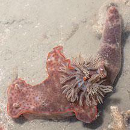
Beting Bronok, Aug 15
|
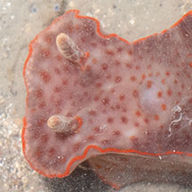
Rhinophores. |
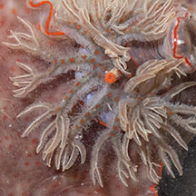
Feathery gills. |
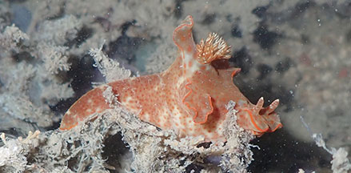
Side 'wings', large lobe over the tail and wedge shaped head.
Beting Bronok, Jul 19 |
|
Sometimes mistaken for the 'Jolly Green Giant' nudibranch (Ceratosoma sinuatum) which has
regular undulating lobes along the edge of the mantle from the head
to the tail.
What does it eat? It is eats sponges. |
| Slender
ceratosoma nudibranchs on Singapore shores |
| Other sightings on Singapore shores |
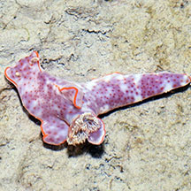
East Coast PCN, Jul 20
Photo shared by Loh Kok Sheng on facebook.
|
|
|
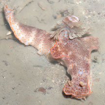
Beting Bronok, Jul 23
Photo shared by Marcus Ng on facebook. |
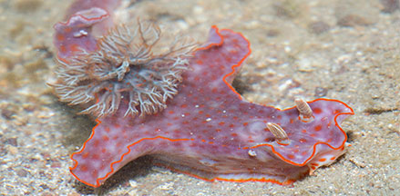
Beting Bronok, Jul 19
Photo
shared by Marcus Ng on flickr.
|
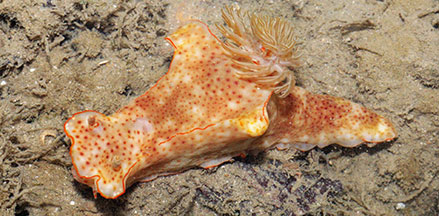
Sentosa Serapong, Jun 18
Photo
shared by Abel Yeo on facebook. |
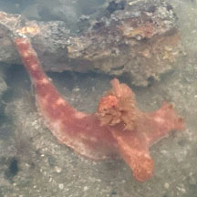
Sentosa Serapong, Jul 25
Photo shared by Tammy Lim on facebook. |
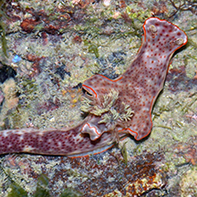
St. John's Island, Feb 15
Photo shared by Neo Mei Lin on her blog. |
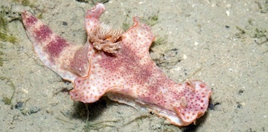
Sentosa Serapong, May 12
Photo
shared by Marcus Ng on facebook.
|
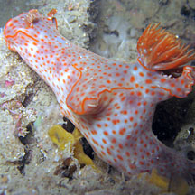
Pulau Hantu, Jul 07
Photo
shared by Toh Chay Hoon on flickr.
|
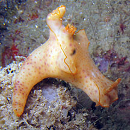
Pulau Hantu, Mar 08
Photo
shared by Toh Chay Hoon on flickr. |
|
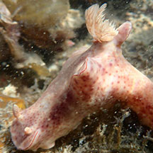
Pulau Semakau (South), Apr 18
Photo shared by Jianlin Liu on facebook. |
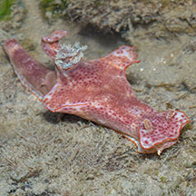
Pulau Semakau (North), Jul 20
Photo shared by Marcus Ng on facebook. |
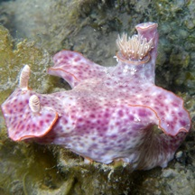
Terumbu Raya, May 09
Photo
shared by Loh Kok Sheng on his
blog. |
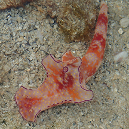
Beting Bemban Besar, Jun 15
Photo shared by Toh Chay Hoon on facebook. |
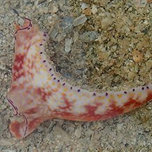
Beting Bemban Besar, Jun 15
Photo shared by Toh Chay Hoon on facebook. |
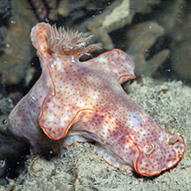
Beting Bemban Besar, Oct 25
Photo shared by Yan Le Su on facebook. |
Links
References
- Tan Siong
Kiat and Henrietta P. M. Woo, 2010 Preliminary
Checklist of The Molluscs of Singapore (pdf), Raffles
Museum of Biodiversity Research, National University of Singapore.
- Debelius,
Helmut, 2001. Nudibranchs
and Sea Snails: Indo-Pacific Field Guide
IKAN-Unterwasserachiv, Frankfurt. 321 pp.
|
|
|